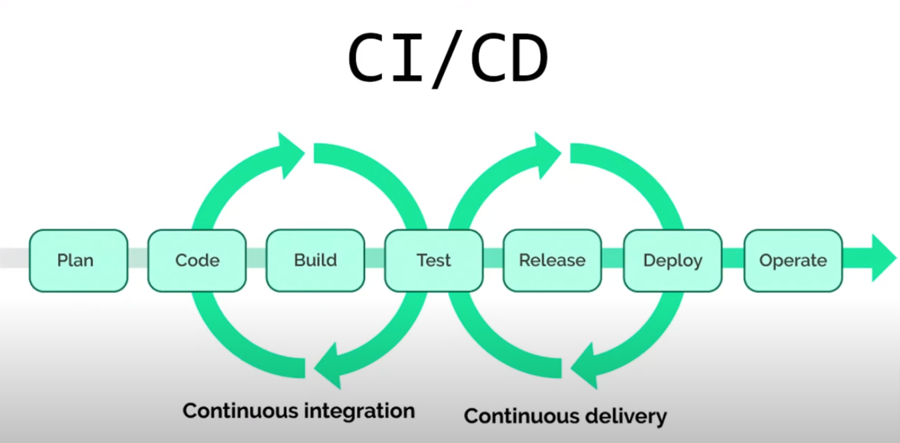

What is CI/CD?
CI/CD stands for Continuous Integration and Continuous Deployment (or Delivery). The goal is to enable teams to deliver high-quality software faster and more reliably.
1. Continuous Integration (CI)
Definition: CI is the practice of merging code changes from all developers into a shared repository (e.g., Git) multiple times a day.
- Key Features:
- Automated builds: Each commit triggers a build process.
- Automated tests: The pipeline runs unit, integration, or other tests to ensure code quality.
- Early bug detection: Issues are identified and fixed early.
- Benefits:
- Reduces integration problems.
- Speeds up feedback loops for developers.
2. Continuous Delivery (CD)
Definition: CD extends CI by automating the delivery of applications to a staging or pre-production environment. Teams ensure that the application is always ready for deployment.
- Key Features:
- Testing in a production-like environment.
- Ensures software can be released at any time.
- Deployment: Requires manual approval before releasing to production.
- Benefits:
- Accelerates release cycles.
- Reduces the risk of deployment errors.
Continuous Deployment (CD)
Definition: Continuous Deployment automates the entire pipeline, from code integration to production deployment. Every change that passes automated tests is automatically deployed to production without manual intervention.
- Key Features:
- Fully automated deployment.
- Rapid delivery to end-users.
- Difference from Continuous Delivery: Continuous Deployment skips manual approval steps.
- Benefits:
- Delivers features to users faster.
- Reduces time to market.
How CI/CD Works
- Source Code Management: Developers push their code to a shared repository (e.g., GitHub, GitLab).
- Build: CI/CD pipelines automatically build the code to create an executable or package (e.g., compile source code, bundle assets).
- Testing: Automated tests (e.g., unit tests, integration tests) ensure that the code is functioning as intended.
- Release (Delivery): Once tests pass, the code is deployed to a staging environment for further validation.
- Deployment (Optional): In Continuous Deployment, the code is automatically pushed to production.
Key Tools for CI/CD
- Source Control: GitHub, GitLab, Bitbucket.
- Build Automation: Jenkins, GitLab CI/CD, CircleCI, GitHub Actions.
- Containerization: Docker.
- Orchestration: Kubernetes.
- Monitoring: Prometheus, Grafana.
1. Platform Integration
GitHub CI/CD:
- Integrated with GitHub repositories.
- Uses YAML-based workflows in
.github/workflows/.
- Offers deep integration with other GitHub features (e.g., issues, pull requests).
- Marketplace with pre-built Actions for different tasks.
GitLab CI/CD:
- Integrated with GitLab repositories.
- Uses YAML-based configuration in
.gitlab-ci.yml.
- Fully integrated within GitLab's platform, including features like GitLab Issues and Merge Requests.
2. Workflow Configuration
GitHub:
- Workflows can be triggered by a variety of events like
push, pull_request, schedule, or custom events.
- Highly flexible, allowing reusable workflows using
workflow_call.
GitLab:
- Uses a pipeline-centric approach with stages like build, test, and deploy.
- Supports reusable configurations with YAML templates and includes.
3. Pricing for CI/CD Minutes
GitHub:
- Offers free minutes (2,000/month for free-tier accounts).
- Charges based on usage beyond the free limit.
GitLab:
- Provides free CI/CD minutes (400/month for free-tier accounts).
- Charges for additional minutes based on the plan.
4. Runners
GitHub:
- GitHub-hosted runners (managed by GitHub) or self-hosted runners.
- Limited customization of GitHub-hosted runners.
GitLab:
- GitLab-hosted shared runners or self-hosted runners.
- Highly customizable self-hosted runners with better control over the environment.
5. Integration with Other Tools
GitHub:
- Seamless integration with the GitHub ecosystem.
- Extensive third-party integrations available in the GitHub Marketplace.
GitLab:
- Offers built-in tools for DevOps (e.g., Container Registry, Kubernetes integration).
- More self-contained for complete DevOps workflows.
6. Deployment Management
GitHub:
- Supports manual and automatic deployments using Actions workflows.
- Requires third-party tools for full deployment visibility and environment management.
GitLab:
- Provides built-in deployment management tools like Environments, Releases, and Kubernetes integration.
- Comprehensive deployment tracking and rollback capabilities.
7. Community and Ecosystem
GitHub:
- Larger user base and community due to its popularity in the open-source ecosystem.
- More public examples and reusable Actions.
GitLab:
- Preferred by organizations that want an all-in-one solution for repositories, CI/CD, and DevOps.
- Strong focus on self-hosting and data privacy.
8. Ease of Use
GitHub:
- Simpler for small to medium projects.
- Ideal for teams already using GitHub for version control.
GitLab:
- Slightly more complex for beginners.
- Best suited for teams that need a comprehensive DevOps platform.